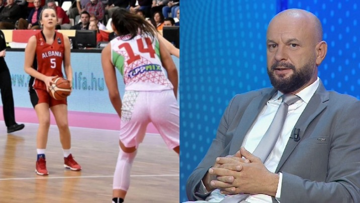
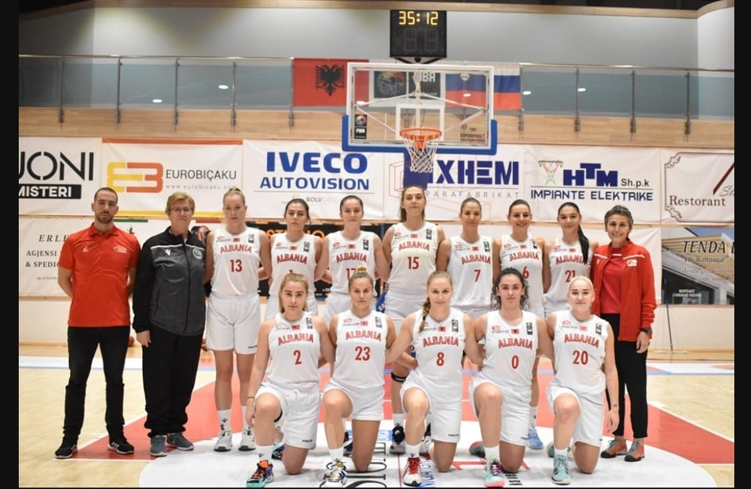

Sporte te tjera


Kombëtarja shqiptare e basketbollit për femra vazhdon të prodhojë rekorde të reja e të padëgjuara, por në aspektin negative. Nga humbje turpëruese me shifrat 125-19 në një tjetër të tillë me rezultatin 28-127. Këtë herë janë sllovenet ato që na japin goditjen e radhës. Kombëtarja e vajzave na “nxin faqen” përsëri në basketboll, ku duket se nuk janë mjaftueshëm të përgatitura për të na përfaqësuar në arenat ndërkombëtare. Pjesa më e errët e ndeshjes së sotme ishte çereku i dytë, aty ku Shqipëria nuk mundi të shënonte asnjë pikë, duke i dhënë kundërshtareve epërsinë 0-34.
Ndeshja e zhvilluar mbrëmjen e djeshme në pallatin e sportit “Dhimitraq Goga” në Fllakë, u fitua nga sllovenet në shifrat 127-28. Plot 99 pikë diferencë, të cilat janë një tregues i qartë i hendekut të jashtëzakonshëm mes basketbollit tonë dhe atij elitar në rang ndërkombëtar. Sllovenet, të cilat disa ditë më parë ishin mundur në shtëpi nga Turqia, rregulluan pikavarazhin në Shqipëri, duke marrë suksesin e parë në këto kualifikuese.
Ashtu sikurse pritej, kombëtarja e drejtuar nga Mirza Alibegaj e kishte tepër të vështirë të matej me një kundërshtar të fortë si Sllovenia, që pozicionohet në vendin e 25-të në renditjen botërore të FIBA-s. Koshi i parë kuqezi mban firmën e Barajt, me rezultatin që shënon në tabelë 5- 2 për Slloveninë.
Perioda e parë do të jetë edhe më e mira për Shqipërinë në këtë takim, që arrin të shënojë 14 pikë, kundrejt 30 të slloveneve. 10-minutëshi i dytë është i tmerrshëm për kombëtaren tonë, që nuk ia del të realizojë asnjë pikë, ndërsa Sllovenia shënon 32, duke shkuar në pushimin ndërmjet dy pjesëve me epërsinë e përgjithshme 62-14.
Sllovenet e rrisin avantazhin në 98-25, pas 30 minutash lojë, teksa e fitojnë periodën e tretë 36-11, ndërsa vulosi suksesin me +99 pikë, duke triumfuar 29-3 në periodën e katërt. Lojtarja e ndeshjes ishte Mojca Jelenc, autore e 24 pikëve dhe 12 kërcimeve në tabelë, duke regjistruar efiçencën +35. Ndërkohë, Mirela Lugaj (14) shënoi gjysmën pikëve të Shqipërisë në këtë takim.
Në sfidën tjetër të Grupit D, Turqia mundi Poloninë 52-41, duke marrë e vetme kryesimin. Ndeshjet kualifikuese do të rikthehen në nëntor të vitit të ardhshëm.
Ndërkohë teksa këto shifra u raportuan në emisionin “Ora Sport”, Altin Sulçe ka dhënë një mendim që të shpëtohet imazhi i Shqipërisë. “Kjo është e papranueshme. Më mirë që të luajnë me njëra-tjetrën këtu sesa të na turpërojnë andej”, u shpreh Sulçe.